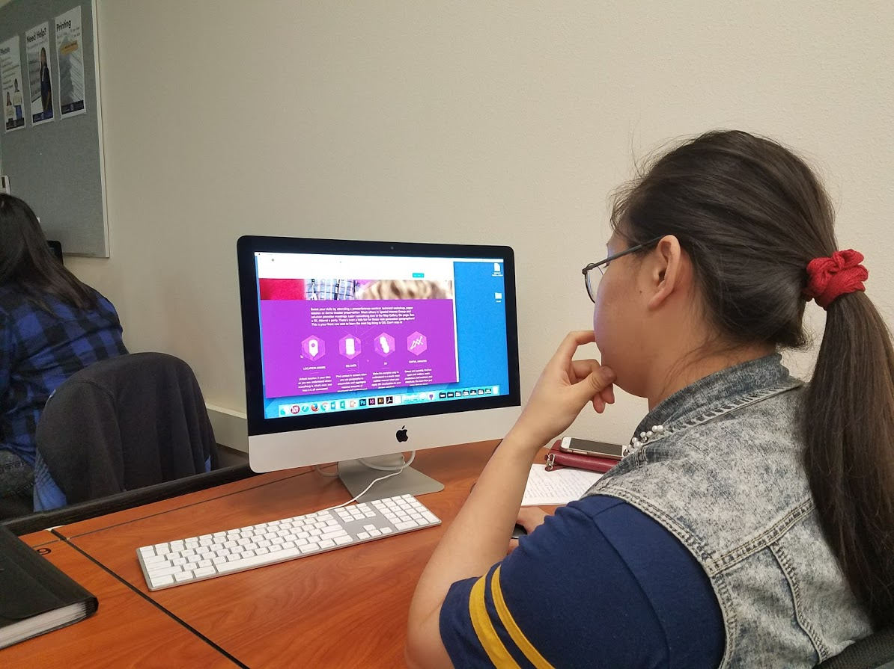

Needfinding
- Provide a brief such that someone visiting the site without prior expectations or context can begin processing the content in a useful way.
- Set expectations on what the site can provide or do.
- Use consistent information hierarchy patterns and style.
- Guide the navigation process – do not make the user guess if we can know their needs.
- Keep the interaction loop small – avoid deep heirarchies.
- Every section should have a clearly styled call to action.
- Use plain english.
- Minimize the amount of information presented - embrace skimming.
- Follow web conventions to minimize time needed to understand pages.
- Do not provide conflicting presentation on the same page.
